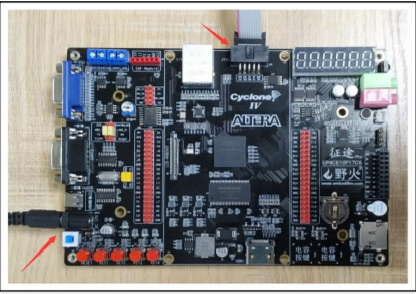
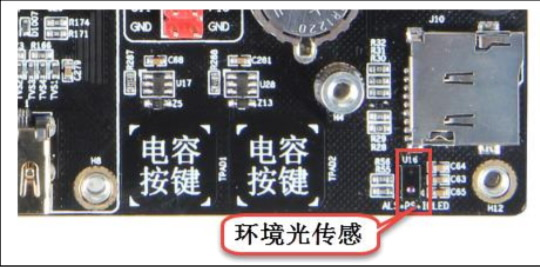
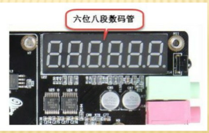
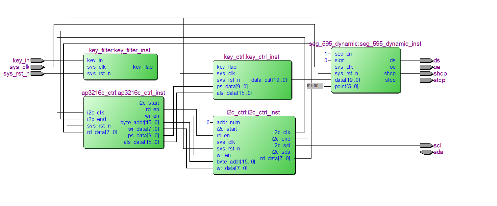
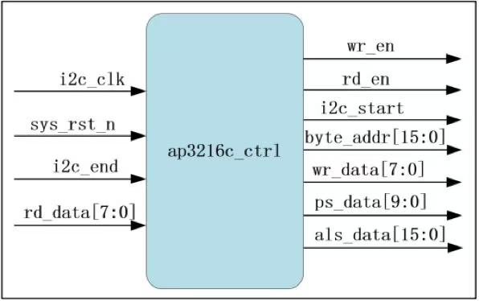

以 Cyclone IV FPGA 为核心，通过 I2C 总线驱动 AP3216C 三合一光学传感器，实现环境光照度与近距离的实时采集与数码管显示。
以 Cyclone IV FPGA 为核心，通过 I2C 总线驱动 AP3216C 三合一光学传感器，实现环境光照度与近距离的实时采集与数码管显示。




I2C 协议实现、8 状态传感器控制状态机与 595 数码管驱动。

通过 3 线串行接口驱动 74HC595 移位寄存器，控制 6 位共阳数码管进行动态扫描，视觉上呈现稳定清晰的数字显示。
设计涵盖 I2C 主机驱动、8 状态传感器控制状态机与 595 数码管动态扫描，经功能验证，PS 与 ALS 采集均正常工作。